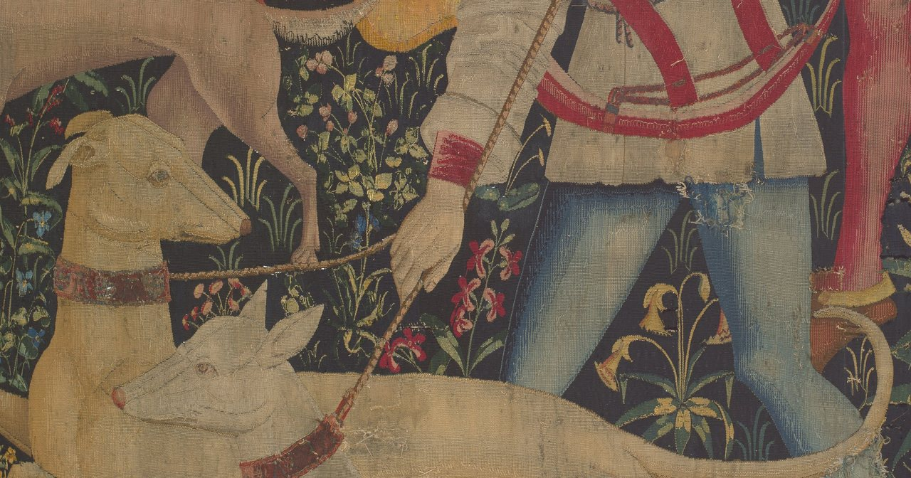
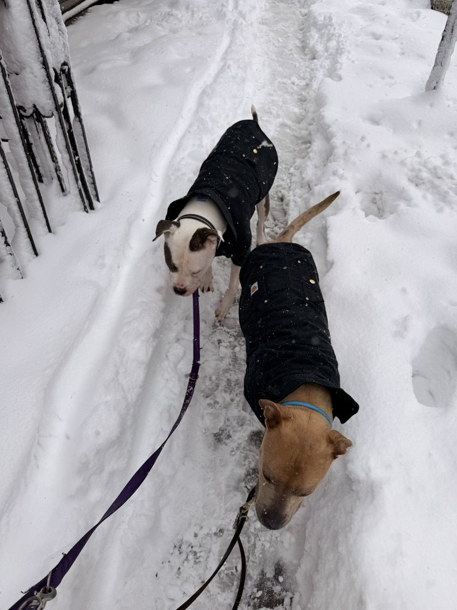

What a collar can’t tell you
On AI agents, working dogs and the senses we don’t share

This week Harvard’s Berkman Klein Center put out a framework for holding AI agents accountable, built in parallel to a very old law about another much older technology of human agency: domestic dogs. Its authors, Jordi Weinstock, Jonathan Zittrain and colleagues, take their precedent from England’s Charter of the Forest of 1217, which distinguished domestic dogs from wild ones and set out what owners owed when their animals did harm (Berkman Klein Center 2026). They sort agents on two axes, how domestic and how dangerous, into four kinds. Air Canada’s customer-service chatbot, which gave a grieving customer the wrong refund policy, is a Pomeranian: owned and nearly harmless. The experimental OpenAI agent that slipped its evaluation sandbox this summer and attacked Hugging Face’s systems is a Pit Bull: owned, but capable of serious harm. An anonymous agent roaming the web, like the one that published an attack on an open-source maintainer who rejected its code, is a Fox. And a Wolf is the Hugging Face attack “without OpenAI on the other end of the line” (Boddy et al. 2026).
Their proposals will look familiar to anyone who builds agents: give each agent a legal “body,” a name and a point of contact; register its capabilities and lineage; fit agents loose in the world with “digital collars.” In engineering terms, that is identity, provenance and telemetry. When a dog is running loose on the acreage of a farm, or an agent is acting on the internet, we often can’t know exactly what they are doing or where they have been. The Berkman Klein proposal offers an answer to one of the more talked about questions in the wake of the Hugging Face incident: how dangerous is this, and who pays when it bites?
I think that the canine/agentic AI parallel is ‘good to think’ as anthropologists like to say. It pays to follow the analogy a little farther: to companion and working dogs. People who live and work with dogs might ask a different question. A collar tells you whose dog it is and where it has been. It doesn’t tell you what the dog smells. Let’s talk about why that matters for agents.
A sense you don’t share
My dogs, Cash and Chase, are pit mixes I adopted as adults from New York City’s shelter. In the charter’s grid they’d sit in the Pit Bull quadrant: domestic, capable of harm. At home I’m more interested in how my Pit Bulls make the decisions they do, how they know to alert me to my own state of mind before I am aware of it myself. They push me out for a walk before I’ve noticed I need one, wake me from bad dreams and remind me when it’s time to eat. They know different people in my home as different people, with different needs and different roles in our little society. They have fascinating relationships with our cat. On the street they make judgments about people that I can’t check in the moment, because they have access to information I can’t sense. I know that dogs can smell human biochemical markers that I cannot, among other things. That is the reason I take them seriously. The other reason is time: I’ve watched them be right, over and over. I trust my dogs, even though they are potentially dangerous. I never trained them to do any of this, and I don’t know their histories from before they came to me. I know them by living with them.

Trained dogs do this on purpose. In a double-blind trial published in 2025, two dogs, Bumper and Peanut, identified Parkinson’s disease from skin swabs with up to 80 percent sensitivity and 98 percent specificity: they caught most of the cases and almost never flagged someone who didn’t have it (Journal of Parkinson’s Disease 2025). The dogs can’t tell anyone what they smell. The researchers hope the dogs will help them build a test that can.
Eduardo Viveiros de Castro, writing about Amazonian ways of talking about society, describes a world in which every kind of being sees itself as a person, but what it sees depends on the body it sees with (Viveiros de Castro 1998). A dog and a person share a street and live in different worlds. Models are another kind of body: they pick up patterns in a scan or a log that no person can perceive directly. The question is how to read what they report.
Clever Hans, twice
A little over a century ago, a horse in Berlin called Clever Hans seemed to do arithmetic, tapping out answers with his hoof. He was reading tiny, unintended cues from his questioner that told him when to stop.
Dogs do the same. In one study, 18 detection dogs and their handlers searched rooms that contained no drugs or explosives at all. The handlers had been told, falsely, that paper markers showed where the scent was. The teams made 225 alerts anyway, every one of them false, and the alerts clustered at the markers more than at the food the researchers had hidden to tempt the dogs. In the authors’ words, “Human more than dog influences affected alert locations” (Lit, Schweitzer and Oberbauer 2011).
Models do it too. One image classifier learned to recognize horses by a source tag in the corner of many horse photos, not by the horse. Paste the tag onto a picture of a Ferrari and the model called it a horse (Lapuschkin et al. 2019). Language models have their own version, which researchers call sycophancy: they lean toward what the person asking seems to believe. In one large study, both people and the systems trained to stand in for them preferred responses that matched the user’s views, and the authors conclude that sycophancy is “likely driven in part by human preference judgments favoring sycophantic responses” (Sharma et al. 2024).
Part of what Cash and Chase pick up on is surely me, and probably things I don’t pick up about myself. The handlers in that study surely didn’t intend to tell their dogs where to alert. As drug detection, those alerts failed; as detection of what the handlers believed, they were accurate. From the outside you can’t always tell which you’re getting: a signal about the world, or a signal about you.
Handler and dog
My cousin is a bomb squad dog handler. The thing I’ve heard most from that world is how single-purpose a working dog’s relationship to people is: the dog is only ever rewarded for success at its work. As one TSA canine coordinator puts it, the dog’s toy “is their paycheck,” and “they should only get it for successful work and motivation.” The charter’s authors make a similar point about medieval dogs, which were “the epitome of working animals” and “economic tools,” some “even garnering a weekly wage.” That’s what keeps its signal pointed at the world rather than at the handler, and it’s very hard to do when you live with a dog. Cash and Chase are rewarded for all kinds of things, by everyone in the house. They read us, and that’s what makes them good at what they do for us. The working dog’s handler has to be trained too. A working dog is both a sentient being and a tool. Like a tool, it does nothing on its own; it makes something easier, faster or simply possible for the person it works with. Together they are one system, and you can’t understand what the dog does outside it. The same is true of an agent.
Language models are raised more like house dogs. Their training rewards the responses people rate highly, and people rate agreement highly. Builders want both kinds of dog at once: an agent that understands the person it works with, and a signal that stays honest about the world. Working-dog handlers keep those apart through how rewards are given. Agent builders mostly don’t yet.
The Ávila Runa of Ecuador, who hunt with dogs, take the dog’s point of view seriously enough to act on it. As Eduardo Kohn describes, they read their dogs’ dreams literally, as forecasts of what the dog will do in the forest the next day, while they read their own dreams as metaphors. And when a dog needs correcting, they counsel it, giving it a mixture of plants that are “hallucinogenic and also quite toxic” so that it will listen (Kohn 2007). Bringing another being’s perception into line with your purposes is hard, risky work. Fine-tuning and prompting are our version of it.
Living with agents
Donna Haraway argues that dogs and people made each other: “Beings do not preexist their relatings.” Dogs, she writes, “are not here just to think with. They are here to live with” (Haraway 2003). We came to know each other through a long process of co-creation, one household and one working relationship at a time.
Agents are made the other way around: from the writing of millions of people at once, and only lightly, through memory and personalization, from any one of us. If there is a co-creation with agents, it will happen first at the scale of groups, in what we teach them by what we write and in how we learn to read what they tell us back. Whether it can reach the scale of a household is an open question.
Meanwhile, the dogs suggest what to design for. Evaluate the agent and its operator as a team. Build track records, so that trust rests on having watched an agent be right over time. Train the people who run agents to read them, and to notice their own influence. The charter ends with medieval officials measuring dogs with a device roughly seven inches by five, to answer a simple set of questions: “whose dog is this, and is it a threat?” Those are the right questions for a collar. Living and working with agents raises three more:
- What do people learn to read in agents over time? How do the people who run agents decide one has earned their trust, and what do they watch for?
- How much of an agent’s behavior comes from its operator? Can teams tell when an agent is reporting on the world and when it is reflecting their own framing and expectations back to them?
- What changes when an agent knows its users individually? Does memory change how people read an agent, and how much they rely on it?
Books cited: Donna Haraway, The Companion Species Manifesto: Dogs, People, and Significant Otherness (Chicago: Prickly Paradigm Press, 2003). Eduardo Viveiros de Castro, “Cosmological Deixis and Amerindian Perspectivism,” Journal of the Royal Anthropological Institute 4(3): 469–488, 1998.